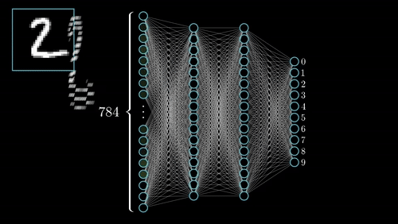
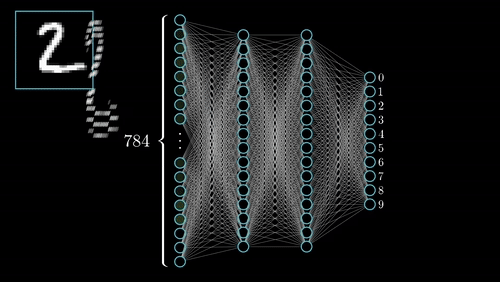

Módulo 1:
Introducción a la Inteligencia Artificial
en la Educación

La Inteligencia Artificial (IA) es un campo multidisciplinario de la informática dedicado a la creación de sistemas computacionales capaces de realizar tareas que tradicionalmente requieren inteligencia humana.
Capacidades clave: Aprendizaje automático, razonamiento lógico, resolución de problemas complejos, percepción sensorial, comprensión y generación de lenguaje natural, y toma de decisiones autónomas.
La IA busca replicar y, en algunos casos, superar los procesos cognitivos humanos mediante algoritmos sofisticados, permitiendo a las máquinas "pensar", "aprender" y "actuar" de manera inteligente en diversos contextos.


Capacidad de adquirir conocimientos, identificar patrones y mejorar el rendimiento a partir de la experiencia y los datos, sin programación explícita
Habilidad para analizar situaciones complejas, evaluar múltiples variables y encontrar soluciones óptimas a desafíos multifacéticos
Comprensión, interpretación y generación de lenguaje humano natural, incluyendo contexto, semántica y pragmática
Interpretación sofisticada de información sensorial: imágenes, sonidos, texto, permitiendo la comprensión del entorno
Capacidad de operar, tomar decisiones y ejecutar tareas de manera independiente en contextos específicos y controlados
Flexibilidad para ajustarse a nuevas situaciones, aprender de errores y optimizar estrategias en tiempo real
El Machine Learning es una rama fundamental de la IA que permite a los sistemas aprender y mejorar automáticamente a través de la experiencia, sin ser programados explícitamente para cada tarea específica.
Proceso fundamental:

El Deep Learning representa la evolución más sofisticada del Machine Learning, utilizando redes neuronales artificiales con múltiples capas (de ahí "profundo") que simulan la estructura y funcionamiento del cerebro humano.
Capacidades revolucionarias:
Revolución educativa: Herramientas como GPT-4, DALL-E, y Midjourney utilizan deep learning para generar contenido educativo original: desde explicaciones textuales hasta ilustraciones científicas personalizadas.


El NLP permite a las máquinas comprender, interpretar, manipular y generar lenguaje humano de manera natural y contextualmente apropiada. Es la tecnología que hace posible la comunicación intuitiva entre humanos y sistemas de IA.
Los prompts son instrucciones cuidadosamente diseñadas que se proporcionan a modelos de IA para obtener respuestas específicas y de alta calidad. La efectividad del prompt determina directamente la utilidad de la respuesta.
Prompt educativo optimizado: "Actúa como un experto pedagogo. Crea una explicación de la fotosíntesis para estudiantes de 12 años, utilizando analogías familiares, incluyendo una actividad práctica, y proporcionando 3 preguntas de reflexión que fomenten el pensamiento crítico."
Modalidad: Actividad Síncrona - Demostración guiada en tiempo real
Objetivo: Comprender visualmente cómo las redes neuronales aprenden y se adaptan a través de la experimentación interactiva.
Reflexión grupal: ¿Cómo se relaciona este proceso de aprendizaje automático con las herramientas de IA que usamos en educación?
 


La IA Generativa representa el paradigma más revolucionario de la inteligencia artificial contemporánea: sistemas capaces de crear contenido completamente original y contextualmente relevante a partir de patrones aprendidos de vastos conjuntos de datos.
Tecnologías subyacentes: Utiliza arquitecturas avanzadas como Transformers (GPT), Modelos de Difusión (DALL-E, Midjourney), y Redes Generativas Adversariales (GANs) para producir contenido indistinguible del creado por humanos.
Artículos, ensayos, resúmenes, planes de clase, ejercicios personalizados, y contenido académico estructurado
Ilustraciones científicas, diagramas educativos, infografías, mapas conceptuales, y arte didáctico
Videos explicativos, animaciones educativas, presentaciones interactivas, y experiencias inmersivas
Programas educativos, simulaciones interactivas, herramientas pedagógicas, y aplicaciones personalizadas
Enseñanza programada: Inspirada en las "teaching machines" de B.F. Skinner, basadas en refinamiento por ensayo y error.
PLATO (1960): Primer sistema generalizado de instrucción asistida por computadora, implementado en la Universidad de Illinois. Introdujo pantallas táctiles, chat, foros, pruebas en línea y sirvió hasta los 2000s.
IBM 1500 (1966): Sistema CAI comercial con terminales gráficos y lápiz-óptico para hasta 32 alumnos.
Experimentos de Patrick Suppes (Stanford): CAI en matemáticas y lectura con IBM 1500, iniciando a mediados de los 1960s.
Ampliación de CAI con microcomputadoras como Apple II, Commodore PET, TRS-80, popularizando los ejercicios interactivos.
PLATO evolucionó: CATO, TUTOR, entornos multimedia, lógica programable y ecosistemas educativos en múltiples disciplinas.
Enfoques conductistas: Refuerzo inmediato, respuestas múltiples, aprendizaje a su propio ritmo.
Investigación IA para tutoría adaptativa: Los ITS combinan psicología cognitiva e IA, avanzando más allá de CAI.
Ejemplos destacados:

Estos primeros sistemas establecieron pilares clave que aún persisten:

Artículos académicos actuales sobre IA en educación, investigaciones empíricas, y estudios de caso internacionales
Conferencias TED, documentales, demostraciones técnicas, y entrevistas con expertos en IA educativa
Episodios sobre tendencias en IA, debates éticos, y experiencias de implementación en diferentes países
Simuladores de IA, plataformas de experimentación, y demos de herramientas educativas emergentes
Documentos oficiales, marcos éticos institucionales, y mejores prácticas de organizaciones educativas
Redes profesionales, grupos de discusión, y comunidades de educadores innovadores en IA